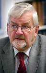
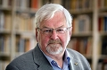

<!DOCTYPE html PUBLIC '-//W3C//DTD XHTML 1.0 Transitional//EN' 'http://www.w3.org/TR/xhtml1/DTD/xhtml1-transitional.dtd'>
<html xmlns='http://www.w3.org/1999/xhtml'>
<head>
<meta http-equiv='content-type' content='text/html;charset=utf-8'/>
<meta name='generator' content='MinSläkt 4.1'/>
<link rel='stylesheet' type='text/css' href='style.css'/>
<!--[if IE 6]>
<link rel='stylesheet' type='text/css' href='style_ie6.css'/>
<![endif]-->
<!--[if IE 7]>
<link rel='stylesheet' type='text/css' href='style_ie7.css'/>
<![endif]-->
<meta name='description' content='Personakt för Tore Lennart Karlsson Frängsmyr, Född 1938-07-08 Sjöbotten, Bureå fs, Skellefteå sn'/>
<meta name='keywords' content='Karlsson Frängsmyr,Tore Lennart,Sjöbotten, Bureå fs, Skellefteå sn'/>
<meta name='author' content='Jan Fredman'/>
<title>Personakt för Tore Lennart Karlsson Frängsmyr, Född 1938-07-08 Sjöbotten, Bureå fs, Skellefteå sn</title>
</head>

<body class='topic'>

<div class='tabs'>
<table>
<tr>
<td class='active'>Personakt</td>
<td class='inactive'><a class='inactive' href='a4ff6ca1f.html#root'>Antavla</a></td>
<td class='none'></td>
</tr>
</table>
</div>

<div class='contents'>
<div class='topic'>
<div class='record'>
<table>
<tr style='vertical-align:top'>
<td>
<h1><span class='u'>Tore</span> Lennart Karlsson Frängsmyr</h1>
<p>Professor i vetenskapshistoria vid Uppsala universitet. Blev 79 år. </p>
              <table>
<tr><th>Far:</th><td><a href='pa003f514.html'><span class='u'>Johan</span> Edvard Karlsson Frängsmyr (1906 - 1987)</a></td></tr>
<tr><th>Mor:</th><td><a href='p2b6cccc1.html'>Alma Linnea Lindberg Karlsson Frängsmyr (1908 - 1989)</a></td></tr>
</table>
<p/>
<table>
<tr valign='baseline'><th><span class='nowrap'>Född:</span></th><td>1938-07-08 Sjöbotten, Bureå fs, Skellefteå sn. <a href='#Source1' title='Skellefteå Lasarett 161/1938,  Mtl Uppsala län 1971'>[1]</a></td></tr>
<tr valign='baseline'><th><span class='nowrap'>Död:</span></th><td>2017-08-28 Uppsala. Dödsorsak: Cancer. <a href='#Source2' title='http://www.unt.se/nyheter/uppsala/tore-frangsmyr-dod-blev-79-ar-4740126.aspx'>[2]</a></td></tr>
</table>

<hr/>
<h2>Äktenskap med <a href='p6d354ee6.html'>Kerstin <span class='u'>Birgitta</span> Thunholm, (1942 - )</a></h2>
<p/>
<table>
<tr valign='baseline'><th><span class='nowrap'>Vigsel:</span></th><td>1970-08-22 Uppsala, Helga Trefaldighets fs, Uppsala kn. <a href='#Source3' title='Mantalslängd 1991, Uppsala län'>[3]</a></td></tr>
<tr valign='baseline'><th><span class='nowrap'>Levde:</span></th><td>1991 Eriksberg 7:19, Gråbergsv 7A, Uppsala, Helga Trefaltighets fs, Uppsala kn. <a href='#Source3' title='Mantalslängd 1991, Uppsala län'>[3]</a></td></tr>
</table>
<p/>
<table>
<tr><th>Barn:</th></tr>
<tr><td><a href='pcde11a2d.html'><span class='u'>Carl</span> Johan Erik Frängsmyr (1971 - )</a></td></tr>
<tr><td><a href='p6ca44738.html'><span class='u'>Emilie</span> Anna Charlotta Frängsmyr (1973 - )</a></td></tr>
<tr><td><a href='p123fd420.html'><span class='u'>Anna</span> Miranda Kristina Frängsmyr (1977 - )</a></td></tr>
<tr><td><a href='p99a0e73b.html'><span class='u'>Knut</span> Petter Wilhelm Frängsmyr (1981 - )</a></td></tr>
</table>

<hr/>
<h2>Noteringar</h2>
<p>Tore Lennart Frängsmyr, född 8 juli 1938 i Skellefteå, död 28 augusti 2017 i Uppsala,[1][2] var en svensk professor i vetenskapshistoria vid Uppsala universitet. Frängsmyr var innehavare av Hans Rausing-professuren i vetenskapshistoria. Han var far till Carl Frängsmyr.<br/><br/>Biografi<br/><br/>Frängsmyr var son till sågverksarbetaren Johan Edvard Karlsson (1906–1987) från Sjöbotten i Bureå, och Alma Linnea Karlsson, född Lindberg (1908–1989) från Lövånger. Namnet Frängsmyr togs 1954 efter Frängsmyren intill Sjöbotten.<br/><br/>Efter studentexamen vid Skellefteå högre allmänna läroverk 1958 inleddes studierna vid Uppsala universitet. Han blev filosofie kandidat 1961, filosofie licentiat 1966 och filosofie doktor 1969 på avhandlingen Geologi och skapelsetro : föreställningar om jordens historia från Hiärne till Bergman. Han var forskningsstipendiat vid University of Cambridge 1972–1973, Visiting fellow Clare Hall Cambridge 1973 (life member 1985), och verksam vid G. Sarton Chairholder University i Gent 1991–1992.<br/><br/>1959 blev Frängsmyr kulturmedarbetare vid Upsala Nya Tidning, vikarierande redaktör för Perspektiv 1961–1963, styrelseledamot vid Kursverksamheten i Uppsala 1975–1978 (ordförande 1977–1978), redaktör i tidskriften Tvärsnitt 1979–1985, styrelseledamot i Sällskapet riksdagsledamöter och forskare 1981–1984, redaktionsmedlem i tidskriften Artes 1984–1989, redaktionsmedlem i den vetenskapshistoriska tidskriften Isis 1985–1992, styrelseledamot i Salénstiftelsen 1987, ordförande i Nationalencyklopedins vetenskapliga råd 1986–1996, samt medarbetare i Norrländsk uppslagsbok till och med 1996. Sedan dess har han huvudsakligen inriktat sig på upplysningen och den epokens stora vetenskapsmän, däribland Carl von Linné, geologins historia och Uppsala universitet. 2001 publicerade han ett verk om kunskapsorganisation, The structure of knowledge : classifications of science and learning since the Renaissance.<br/><br/>I Sökandet efter Upplysningen (1993), försökte Frängsmyr spåra upplysningens idéer i 1700-talets Sverige. Hans tes var att det inte fanns någon &quot;upplysning&quot; att tala om i Sverige. Hans definition av upplysning var enkelt framställt de idéer som härstammar från upplysningstänkarna kring den franska Encyklopedien.<br/><br/>1981 blev Frängsmyr professor i teknik och social förändring vid Linköpings universitet och 1982 fick han en forskningsrådsprofessur i vetenskapshistoria, placerad vid Institutionen för idé- och lärdomshistoria vid Uppsala Universitet; tjänsten överfördes 1994 till universitetet. År 2001 utsågs han till förste innehavare av Hans Rausing-professuren i vetenskapshistoria, en lärostol tillkommen efter en donation av Lisbet Rausing. Den 31 juli 2007 gick han i pension, och efterträddes då som Hans Rausing-professor av den tyske forskaren H. Otto Sibum.<br/><br/>Tore Frängsmyr författade flera betydande översiktsverk, exempelvis Svensk idéhistoria: bildning och vetenskap under tusen år I-II (2000). Han var föreståndare vid Vetenskapsakademiens Centrum för vetenskapshistoria från starten 1988 till 2006, redaktör för Nobelkommitténs årsbok Les Prix Nobel, ordförande i Alf Henrikson-sällskapet och generalsekreterare i International Union of History of Science 1989–1993.<br/><br/>Frängsmyr blev 1973 ledamot av Kungliga Vetenskapssamhället i Uppsala, av Samfundet för utgivande av handskrifter rörande Skandinaviens historia 1982, av Humanistiska Vetenskapssamfundet i Uppsala 1983, av Ingenjörsvetenskapsakademien 1984, av Vetenskapsakademien 1984, av Acad. Europaea 1989, av Acad. Internat. d'Hist. des Sci. 1991, av Vitterhetsakademien 1997, samt blev hedersledamot av Norrlands nation i Uppsala 1988.<br/><br/>Vid sidan av sin ordinarie verksamhet engagerade Frängsmyr sig i den offentliga debatten. Han protesterade mot genusmärkning av universitet och kallade den politiska metoden diktatorisk och ovetenskaplig, engagerade sig mot vad han kallade åsiktsförföljelse mot kollegor som utpekats som att ha förlegad kvinnosyn, debatterade nutida utbildningspolitik och forskningskvalitet.<br/>Han var gift med Birgitta Thunholm från 1970 till sin bortgång i cancer. Frängsmyr är begravd på Uppsala gamla kyrkogård.<br/><br/>Bibliografi<br/>Geologi och skapelsetro (1969)<br/>Wolffianismens genombrott i Uppsala (1972)<br/>Ostindiska kompaniet (1976)<br/>Upptäckten av istiden (1976)<br/>Svärmaren i vetenskapens hus (1977)<br/>Vägröjare i kulturdebatten (1977)<br/>Framsteg eller förfall (1980)<br/>Liten handbok för avhandlings- och uppsatsskrivare (1983)<br/>Vetenskapsmannen som hjälte (1984)<br/>Jordens figur (1986)<br/>Carl Wilhelm Scheele (1987)<br/>Gubben som gräver (1989)<br/>Observatoriemuseet (1992)<br/>Sökandet efter upplysningen (1993)<br/>Historien om Pekingmänniskan (1996)<br/>Den gudomliga ekonomin (1997)<br/>Idéer och lärdom (1997)<br/>Svensk idéhistoria (2000)<br/>Om vetenskapshistoria (2003)<br/>Avdelningen för vetenskapshistoria 1982-2002 (2003)<br/>Sökandet efter upplysningen (Utökad och uppdaterad) (2006)<br/>Pekingmänniskan - en historia utan slut (2006)<br/>Vetenskapshistoria under 25 år : 1982–2007 (2007)<br/><br/>Priser och utmärkelser<br/>1996 – Sverige H.M. Konungens medalj i guld 8:e storleken i serafimerordens band<br/>2001 – John Landquists pris<br/>2007 – Disapriset<br/>2007 – Linnémedaljen i guld<br/>2013 – Gerard Bonniers pris<br/><br/>Källor<br/>1.  Tore Frängsmyr död – blev 79 år, Upsala Nya Tidning 29 augusti 2017<br/>2.  <a href='http://www.familjesidan.se/cases/37a6dfdf-2713-4b8b-ad3d-db8829de7e95/funeral-notices' target='_new'>www.familjesidan.se/cases/37a6dfdf-2713-4b8b-ad3d-db8829de7e95/funeral-notices</a><br/><br/>Vem är det : Svensk biografisk handbok 1999, red. Elisabeth Gafvelin, P. A. Norstedt &amp; Söners Förlag, Stockholm 1998 ISBN 91-1-300536-7 ISSN 0347-3341 s. 351<br/><br/>Tore Frängsmyr på Avdelningen för vetenskapshistoria vid Uppsala universitets webbplats<br/><br/>Inspektor vid Norrlands Nation i Uppsala 2003-2011<br/><a href='http://sv.wikipedia.org/wiki/Norrlands_nation,_Uppsala#Inspektorer' target='_new'>sv.wikipedia.org/wiki/Norrlands_nation,_Uppsala#Inspektorer</a><br/><br/>Externa länkar<br/>Tore Frängsmyr i Libris<br/><a href='http://libris.kb.se/hitlist.jsp?q=f%C3%B6rf%3A%28Fr%C3%A4ngsmyr%2C+Tore%2C+1938-%29' target='_new'>libris.kb.se/hitlist.jsp?q=f%C3%B6rf%3A%28Fr%C3%A4ngsmyr%2C+Tore%2C+1938-%29</a><br/><br/>Tore Frängsmyr på Kungliga Vetenskapsakademiens webbplats<br/><a href='http://www.kva.se/sv/Ledamoter/Kontakt-sida/?personId=72' target='_new'>www.kva.se/sv/Ledamoter/Kontakt-sida/?personId=72</a><br/><br/>CV på Nobelprize.org<br/><a href='http://www.nobelprize.org/alfred_nobel/biographical/articles/frangsmyr/cv.html' target='_new'>www.nobelprize.org/alfred_nobel/biographical/articles/frangsmyr/cv.html</a><br/><br/>______________________________________________________________________<br/><br/>Tore Frängsmyr, tidigare innehavare av Hans Rausing-professuren i vetenskapshistoria vid Uppsala universitet, har avlidit efter en längre tids sjukdom. Han blev 79 år.<br/><br/>I slutet av 1950-talet kom Tore Frängsmyr som student till Uppsala universitet där han disputerade på doktorsavhandlingen Geologi och skapelsetro 1969. Mellan 2001 och 2007 var han den förste innehavaren av Hans Rausing-professuren i vetenskapshistoria.<br/><br/>Tore Frängsmyr skrev en rad böcker, bland annat om upplysningstiden och dess vetenskapsmän, däribland Linné. Flera av hans arbeten finns även utgivna på engelska.<br/><br/>Bland Tore Frängsmyrs många uppdrag kan nämnas dem som mångårig föreståndare för Vetenskapsakademiens centrum för vetenskapshistoria, projektledare för böcker om Uppsala universitets historia och generalsekreterare i International Union of History of Science.<br/><br/>Under närmare 50 år medverkade Tore Frängsmyr som kulturskribent i UNT.<br/><br/>UNT Åke Spross14:53 | 2017-08-29<br/><a href='http://www.unt.se/nyheter/uppsala/tore-frangsmyr-dod-blev-79-ar-4740126.aspx' target='_new'>www.unt.se/nyheter/uppsala/tore-frangsmyr-dod-blev-79-ar-4740126.aspx</a><br/><br/>_________________________________________________________________<br/><br/>Tore Frängsmyr<br/><br/>Måndagen 28 augusti avled Tore Frängsmyr, Uppsala, i en ålder av 79 år. Han var professor emeritus vid Uppsala universitet, tidigare innehavare av Hans Rausing-professuren i vetenskapshistoria.<br/><br/>Tore växte upp i Sjöbotten, Bureå, son till sågverksarbetaren Johan Karlsson och dennes maka Linnea. Namnet Frängsmyr togs 1954 efter Frängsmyren intill Sjöbotten.<br/><br/>Under gymnasietiden arbetade han som journalist på tidningen Norran i Skellefteå, både som frilansare och som sommarvikarie.<br/><br/>Efter studentexamen vid Skellefteå högre allmänna läroverk 1958 inleddes studierna vid Uppsala universitet och 1969 blev han filosofie doktor.<br/><br/>Tore kom att inneha en mängd olika uppdrag, medverkade i olika tidningar och tidskrifter och var bland annat kulturmedarbetare vid Upsala Nya Tidning. Fram till 1996 var han medarbetare i Norrländsk uppslagsbok och 2001 publicerade han ett verk om kunskapsorganisation.<br/><br/>1981 blev Tore Frängsmyr professor i teknik och social förändring vid Linköpings universitet och fick 1982 en forskningsrådsprofessur i vetenskapshistoria vid Institutionen för idé- och lärdomshistoria vid Uppsala universitet. År 2001 utsågs han så till den förste innehavaren av Hans Rausingprofessuren i vetenskapshistoria. Tore Frängsmyr gick i pension 2007.<br/><br/>Han var bland annat föreståndare vid Vetenskapsakademins centrum för vetenskapshistoria, vilket han själv grundade, 1988-2006, var redaktör för Nobelkommitténs årsbok samt ordförande i Alf Henriksson-sällskapet.<br/><br/>1984 blev han medlem i Ingenjörsvetenskapsakademien samt Vetenskapsakademien och blev medlem i Vitterhetsakademien 1997. Tore utsågs till hedersledamot av Norrlands nation i Uppsala 1988 och var dessutom nationens inspektor 2003-2011.<br/><br/>Han var sedan 1970 gift med Birgitta, född Thunholm, från Sundsvall.<br/><br/>Närmast anhöriga är, förutom hustrun, fyra barn med familjer.<br/><br/>......................................................<br/><br/>Professor Tore Frängsmyr, Uppsala, har avlidit vid en ålder av 79 år. Närmast sörjande är makan Birgitta (f. Thunholm) och barnen Carl, Emilie, Anna och Knut med familjer.<br/><br/>I det tidiga 2000-talets svenska litterära landskap hade härstamning från Västerbotten samma klang som ett värmländskt påbrå hundra år tidigare. Trots djupgående skillnader i både mentalitet och social struktur mellan det bondefromma livsallvaret i de karga norrlandsbygderna och det frejdiga kavaljerslynnet i väst växte på båda håll fram en betydande litteratur men också en livskraftig humanistisk forskning.<br/><br/>Hos professor Tore Frängsmyr flöt de västerbottniska livskällorna samman på ett fruktbart sätt. Han växte upp som det femte barnet i en syskonskara på åtta i ett småbrukarhem i byn Sjöbotten utanför Skellefteå. I utkanten av byn låg Frängsmyren, en våtmark där familjens kor betade. och från vilken man på 1950-talet tog sitt släktnamn. I samma by växte P.O. Enquist upp, och med Torgny Lindgren var Tore Frängsmyr bänkkamrat en tid under gymnasieåren. Efter studentexamen i Skellefteå 1958 bar det av till Uppsala där Tore, parallellt med studierna, skrev artiklar i dagspressen och vann stor uppskattning med sin rappa penna.<br/><br/>Det blev dock inte skönlitteraturen utan vetenskapen som lade beslag på Tores vitalitet. Hans kraft och arbetsförmåga ledde till den vetenskapshistoriska avhandlingen Geologi och skapelsetro (1969) och därefter till en lång rad lärda verk. Hans förtrogenhet med hembygdens skönlitterära berättare kom emellertid Norrlands nations studenter till godo när han 2003 som professor valts till nationens inspektor och bland andra aktiviteter kunde organisera författaraftnar på högsta nivå. På samma sätt gjorde hans erfarenhet från pressen honom till en effektiv och uppskattad medarbetare i lärda tidskrifter och antologier. Han var en av initiativtagarna till tidskriften Tvärsnitt och hans insats som organisatör och författare kom att bli av avgörande betydelse för Nationalencyklopedins tillkomst. Han medverkade också aktivt i Norrländsk uppslagsbok liksom i Uppsala universitets historia.<br/><br/>Konstnären Tage Åséns porträtt av Tore Frängsmyr på Norrlands nation är skickligt och träffande. Det visar en humanistisk vetenskapsman, som med en öppet bjudande hand och med ett lärt verk i den andra handen tar del i en intellektuell debatt: lugn, vänlig, lyssnande men också säker på det rationella i sin övertygelse.<br/><br/>Stig Strömholm, Norrlands nations inspektor, 1978-2003<br/><br/>Bo Sundqvist, Uppsala universitets rektor, 1997-2006<br/><br/>Norran<br/>Publicerad 2017-09-06 (uppdaterad lördag 17 mars)<br/><br/><a href='https://www.norran.se/familj/dodsfall/tore-frangsmyr/' target='_new'>www.norran.se/familj/dodsfall/tore-frangsmyr/</a><br/><br/>________________________________________________________<br/><br/>Minnesord: Tore Frängsmyr<br/><br/>Professor Tore Frängsmyr, Uppsala, har avlidit i en ålder av 79 år. Närmast anhöriga är hustrun Birgitta och barnen Carl, Emilie, Anna och Knut med familjer.<br/><br/><br/> Skriv ut   Rätta artikel    Spara artikel<br/>Tore Frängsmyr och jag i träffades i början av 1960-talet på en kvällskurs för att läsa in latin till studentexamen. Jag noterade hans prydliga handstil som korresponderade väl med det prydliga skägget och hans exakta sätt att uttrycka sig med lätt västerbottnisk accent.<br/><br/>Tore var då redan kulturskribent på UNT, något som han skulle fortsätta med i nära femtio år. Då och då flöt det också in lärda understreckare av hans hand i Svenska Dagbladet.<br/><br/>Med tidskriften Tvärsnitt, vars redaktör han var 1979–85, blev han en välkänd kulturpersonlighet i hela landet. Bland många spår av Tores verksamhet noterade jag hans arbete med Nationalencyklopedin; han var ordförande i dess vetenskapliga råd 1986–1996.<br/><br/>I Gamla Eriksberg bodde Tore med sin familj i nästan femtio år. När vi 1997 skulle flytta in mitt emot gjorde Tore grannarna konfunderade med frågan om den nye grannen talade latin. Det gjorde nu ingen av oss. Däremot fann vi varandra som historiker med enkel lantlig bakgrund. Ett och annat från bakgrunden behövde vi ibland förtydliga på klingande skelleftemål respektive pitemål.<br/><br/>Tore visade mig tidigt manuset till storverket ”Svensk idéhistoria” som kom ut år 2000 i två band. Min bokhylla har sedan dess fyllts på med Tores skrifter, nu senast en uppsats med titeln ”Humanisten Johan Nordström – ett femtioårsminne” publicerad i år.<br/><br/>Jag fick veta att det egentligen var Tore som delade ut Nobelprisen, dock med hjälp av kungen. Att det var Tore som lämnade priserna till kungen innan kungen lämnade dem vidare har vi kunnat konstatera i tv fram till 2010. Ändå var det vardagliga slitet med bland annat Nobelstiftelsens årsbok viktigare.<br/><br/>Hur Hans Rausing-professuren i vetenskapshistoria kom till, att Tore 2001 blev dess förste innehavare, att han 2003 efterträdde Stig Strömholm som inspektor för Norrlands nation– liksom allt möjligt annat pratade vi om under otaliga sittningar med ett par glas vin tillsammans med Birgitta och min fru.<br/><br/>När Birgitta och jag sista gången hämtade Tore från sjukhuset behövde han hjälp för att ta sig in i huset. Det bestående minnet från den stunden är Tores trygga hand.<br/><br/>Uno Westerlund<br/><br/>DAGENS NYHETER  Publicerad 2017-09-15<br/><br/><a href='https://www.dn.se/familj/minnesord-tore-frangsmyr/' target='_new'>www.dn.se/familj/minnesord-tore-frangsmyr/</a></p>

<hr/>
<h2>Personhistoria</h2>
<table>
<tr><th>Årtal</th><th>Ålder</th><th>Händelse</th></tr>
<tr>
<td>1938</td>
<td align='right'></td>
<td>Födelse 1938-07-08 Sjöbotten, Bureå fs, Skellefteå sn <a href='#Source1' title='Skellefteå Lasarett 161/1938,  Mtl Uppsala län 1971'>[1]</a></td>
</tr>
<tr>
<td>1942</td>
<td align='right'>3&nbsp;år</td>
<td>Makan <a href='p6d354ee6.html'>Kerstin <span class='u'>Birgitta</span> Thunholm,</a> föds 1942-01-31 Nybrogatan 43, Sundsvall, Gustav Adolf fs, Sundsvalls stad <a href='#Source4' title='Sundsvalls Gustav Adolf C I:11 (1941–1946)    26/1942  bild 52'>[4]</a></td>
</tr>
<tr>
<td>1970</td>
<td align='right'>32&nbsp;år</td>
<td>Vigsel <a href='p6d354ee6.html'>Kerstin <span class='u'>Birgitta</span> Thunholm,</a> 1970-08-22 Uppsala, Helga Trefaldighets fs, Uppsala kn <a href='#Source3' title='Mantalslängd 1991, Uppsala län'>[3]</a></td>
</tr>
<tr>
<td>1971</td>
<td align='right'>32&nbsp;år</td>
<td>Sonen <a href='pcde11a2d.html'><span class='u'>Carl</span> Johan Erik Frängsmyr</a> föds 1971-01-14 Uppsala, Helga Trefaldighets fs, Uppsala kn <a href='#Source3' title='Mantalslängd 1991, Uppsala län'>[3]</a></td>
</tr>
<tr>
<td>1973</td>
<td align='right'>35&nbsp;år</td>
<td>Dottern <a href='p6ca44738.html'><span class='u'>Emilie</span> Anna Charlotta Frängsmyr</a> föds 1973-08-02 Uppsala, Helga Trefaldighets fs, Uppsala kn <a href='#Source3' title='Mantalslängd 1991, Uppsala län'>[3]</a></td>
</tr>
<tr>
<td>1977</td>
<td align='right'>39&nbsp;år</td>
<td>Dottern <a href='p123fd420.html'><span class='u'>Anna</span> Miranda Kristina Frängsmyr</a> föds 1977-09-20 Uppsala, Helga Trefaldighets fs, Uppsala kn <a href='#Source3' title='Mantalslängd 1991, Uppsala län'>[3]</a></td>
</tr>
<tr>
<td>1981</td>
<td align='right'>42&nbsp;år</td>
<td>Sonen <a href='p99a0e73b.html'><span class='u'>Knut</span> Petter Wilhelm Frängsmyr</a> föds 1981-05-08 Uppsala, Helga Trefaldighets fs, Uppsala kn <a href='#Source3' title='Mantalslängd 1991, Uppsala län'>[3]</a></td>
</tr>
<tr>
<td>1987</td>
<td align='right'>48&nbsp;år</td>
<td>Fadern <a href='pa003f514.html'><span class='u'>Johan</span> Edvard Karlsson Frängsmyr</a> dör 1987-02-15 Sjöbotten 11969, Bureå fs, Skellefteå kn <a href='#Source5' title='RTB 87 / SPAR 90'>[5]</a></td>
</tr>
<tr>
<td>1989</td>
<td align='right'>50&nbsp;år</td>
<td>Modern <a href='p2b6cccc1.html'>Alma Linnea Lindberg Karlsson Frängsmyr</a> dör 1989-06-02 N Åg 4 C, Bureå, Bureå fs, Skellefteå kn <a href='#Source6' title='RTB 89 / SPAR 90'>[6]</a></td>
</tr>
<tr>
<td>1991</td>
<td align='right'></td>
<td>Levde <a href='p6d354ee6.html'>Kerstin <span class='u'>Birgitta</span> Thunholm,</a> 1991 Eriksberg 7:19, Gråbergsv 7A, Uppsala, Helga Trefaltighets fs, Uppsala kn <a href='#Source3' title='Mantalslängd 1991, Uppsala län'>[3]</a></td>
</tr>
<tr>
<td>2017</td>
<td align='right'>79&nbsp;år</td>
<td>Död 2017-08-28 Uppsala <a href='#Source2' title='http://www.unt.se/nyheter/uppsala/tore-frangsmyr-dod-blev-79-ar-4740126.aspx'>[2]</a></td>
</tr>
</table>

<hr/>
<h2>Källor</h2>
<table>
<tr><td id='Source1'>[1]</td><td>Skellefteå Lasarett 161/1938,  Mtl Uppsala län 1971</td></tr>
<tr><td></td><td><i></i></td></tr>
                <tr><td>&nbsp;</td><td>&nbsp;</td></tr>
<tr><td id='Source2'>[2]</td><td>http://www.unt.se/nyheter/uppsala/tore-frangsmyr-dod-blev-79-ar-4740126.aspx</td></tr>
<tr><td></td><td><i></i></td></tr>
                <tr><td>&nbsp;</td><td>&nbsp;</td></tr>
<tr><td id='Source3'>[3]</td><td>Mantalslängd 1991, Uppsala län</td></tr>
<tr><td></td><td><i></i></td></tr>
                <tr><td>&nbsp;</td><td>&nbsp;</td></tr>
<tr><td id='Source4'>[4]</td><td>Sundsvalls Gustav Adolf C I:11 (1941–1946)    26/1942  bild 52</td></tr>
<tr><td></td><td><i></i></td></tr>
                <tr><td>&nbsp;</td><td>&nbsp;</td></tr>
<tr><td id='Source5'>[5]</td><td>RTB 87 / SPAR 90</td></tr>
<tr><td></td><td><i></i></td></tr>
                <tr><td>&nbsp;</td><td>&nbsp;</td></tr>
<tr><td id='Source6'>[6]</td><td>RTB 89 / SPAR 90</td></tr>
<tr><td></td><td><i></i></td></tr>
</table>
</td>


<td>
<table>
<tr><td width='120'><a href='p4ff6ca1f0o.jpg'></a></td></tr>
<tr><td>Tore Frängsnyr<br/><br/>Foto: Hans E Ericson<br/><br/><a href='http://www.unt.se/nyheter/uppsala/tore-frangsmyr-dod-blev-79-ar-4740126.aspx' target='_new'>www.unt.se/nyheter/uppsala/tore-frangsmyr-dod-blev-79-ar-4740126.aspx</a><br/>&nbsp;</td></tr>
<tr><td>&nbsp;</td></tr>
<tr><td width='120'><a href='p4ff6ca1f1o.jpg'></a></td></tr>
<tr><td>Tore Frängsmyr<br/><br/>Foto: Robert Johansson<br/><br/><a href='http://www.unt.se/nyheter/uppsala/tore-frangsmyr-dod-blev-79-ar-4740126.aspx' target='_new'>www.unt.se/nyheter/uppsala/tore-frangsmyr-dod-blev-79-ar-4740126.aspx</a><br/>&nbsp;</td></tr>
<tr><td>&nbsp;</td></tr>
<tr><td width='120'><a href='p4ff6ca1f2o.jpg'></a></td></tr>
<tr><td></td></tr>
</table>
</td>
</tr>
</table>
</div>

<div class='start_page'>
<a href='index.html' target='_parent'>&lt;&lt; Startsida</a>
</div>

<div class='footer'>
Skapad av <a href='http://www.dannbergsdata.se/' target='_parent'>MinSläkt 4.1</a>, Programmet tillhör: <a href='mailto:jan.fredman@gmail.com'>Jan Fredman</a>
</div>
</div>
</div>
</body>
</html>
